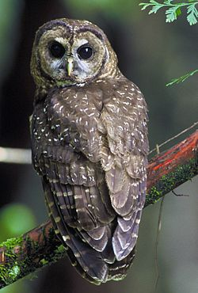

Sove ili nocne grabljivice (Strigiformes) su red uglavnom usamljenih ptica grabljivica u koji se ubraja više od 200 vrsta. Love plen uglavnom nocu u cemu im pomaže pretežno siva boja i skoro necujan let. Dele se u dve savremene familije - tipicne sove (Strigidae) i kukuvije (Tytonidae). Uglavnom se hrane sitnim sisarima, pticama i insektima, a pojedine vrste se hrane i ribom. Žive na svim kontinentima osim na Antarktiku, velikom delu Grenlanda i pojedinim ostrvima.Sove karakteriše oštar kljun, vec od korena snažno povijen prema dole, i precizan sluh i vid. Visina im je 10–70 cm. Telo im je zbijeno a glava, u poredenju sa drugim pticama, upadljivo velika i okrugla. Imaju upadljiv pernati okvir oko ociju, koji se naziva facijalni disk.
| Sova |
|---|
|  |